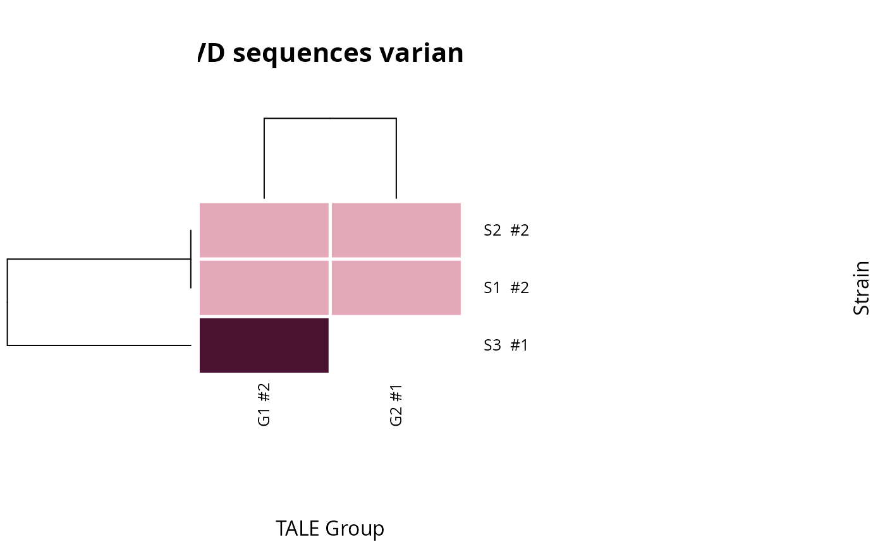
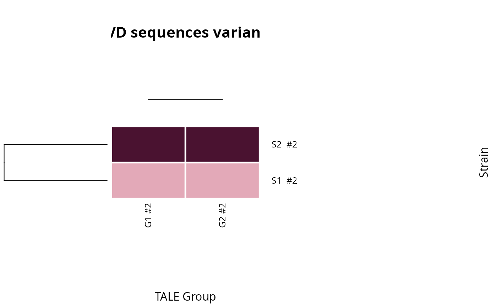

Heatmap of RVD sequence variants across strains and TALE groups
Source:R/classification.R
talomes_heatmap.RdDraws a talome overview: one column per TALE group, one row per strain, each cell showing which RVD sequence variant that strain carries in that group. A strain's talome is its whole complement of TALEs, so the plot shows at a glance which groups each strain has and where strains carry different variants of the same TALE.
Within a group, variants are ranked by how many strains carry them, and
the cell colour is that rank: the most common variant is the palest and
rarer ones are darker.
The # after each group label counts its distinct
variants. A white cell means the strain has no member in that group. A
cell can hold several colours side by side when a strain carries more
than one variant in the same group. Dendrograms order strains and groups
by the similarity of their variant profiles.
Usage
talomes_heatmap(
tale_annotation,
group_col,
strain_col,
rvd_col,
trunc_tales_col = NULL,
extra_col = NULL,
x_lab = "TALE Group",
y_lab = "Strain",
title = "RVD sequences variants",
plot_type = "all",
colors = .tantale_colours$variant_ranks,
margins = NULL,
sep_width = 5,
sep_color = "white",
inner_sep_color = "white",
save_path = NULL
)Arguments
- tale_annotation
A data frame with one row per TALE and at least a group, a strain and an RVD-sequence column. Or a
talesobject carrying group and strain columns, with one value per array (for instance a groupedtalesto which a strain column was added): the RVD sequences are then computed withtales_rvd_strings, and arrays without repeats are left out.- group_col
Name of the
tale_annotationcolumn holding TALE groups, drawn as columns (e.g. thegroupfromtales_group_kmedoids).- strain_col
Name of the column holding strain names, drawn as rows.
- rvd_col
Name of the column holding RVD sequences (e.g. from
tales_rvd_strings). Not needed whentale_annotationis atalesobject.- trunc_tales_col
Optional name of a logical column marking truncated TALEs; those are labelled "T" in their cell (with
plot_type = "all").- extra_col
Optional name of a column with further information about each strain (e.g. origin), drawn as a side bar on the right.
- x_lab, y_lab, title
Axis names and plot title.
- plot_type
Either
"all"to draw every allele, or"single"to draw one representative allele per group.- colors
Colours from the most common variant to the rarest. They are interpolated over the ranks present, so the most common variant always gets the first colour and the rarest the last. The default runs from pale to dark wine, so a rare variant stands out.
- margins
Space for the row dendrogram, column dendrogram, row names and column names, in that order, counted in heatmap cells.
NULL(default) sizes the dendrograms to a quarter of the heatmap's width and height, between 1.5 and 5 cells, with 3 cells for the names. Withplot_type = "single"the column dendrogram also holds the title and gets at least 3.5 cells.- sep_width
Width of the separator between adjacent cells.
- sep_color
Colour of the separator between adjacent cells.
- inner_sep_color
Colour of the separator between variants within one cell.
- save_path
Optional file path; the image format follows the file extension. If
NULL(default), the heatmap is drawn on the current device.
Value
NULL, invisibly. Called for the side effect of drawing the
heatmap (or, if save_path is given, writing it to a file).
See also
Other TALE plots:
plot.tales(),
plot.tales_msa(),
plot_target_preds()
Examples
ann <- data.frame(
group = c("G1", "G1", "G1", "G2", "G2"),
strain = c("S1", "S2", "S3", "S1", "S2"),
rvdseq = c("NI-HD-NG", "NI-HD-NG", "NN-HD-NG",
"HD-NI-NG-NG", "HD-NI-NG-NG")
)
talomes_heatmap(ann, group_col = "group", strain_col = "strain",
rvd_col = "rvdseq")

# From a tales object: one group and one strain per array
x <- tales_from_telltales(system.file("extdata", "tellTaleExampleOutput",
package = "tantale"))
x$group <- c(ROI_00001 = 1, ROI_00002 = 1, ROI_00003 = 2, ROI_00004 = 2)[x$array_id]
x$strain <- c(ROI_00001 = "S1", ROI_00002 = "S2", ROI_00003 = "S1",
ROI_00004 = "S2")[x$array_id]
talomes_heatmap(x, group_col = "group", strain_col = "strain")
